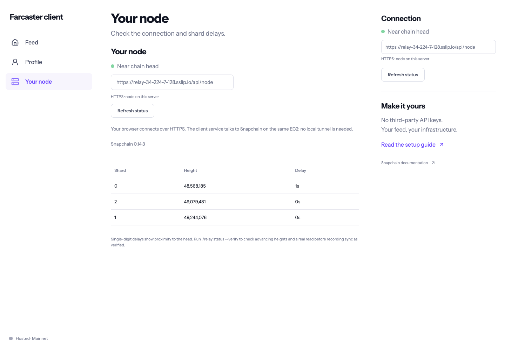
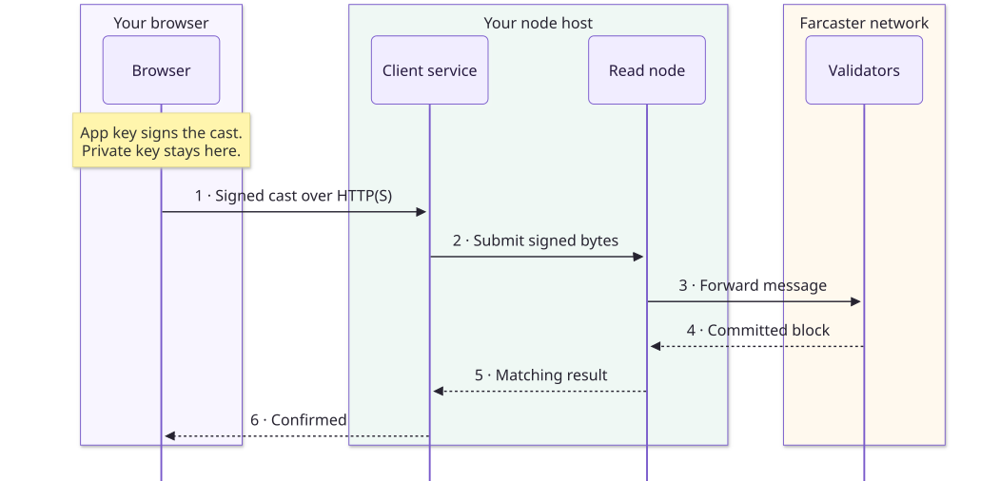

On this page
Run your own
Farcaster node
and client.
Three commands put a Snapchain node and a Farcaster client on one AWS server. Then you read and post from your browser, through your own node.
- You need
- A computer, an AWS account and access to the repository
- Time
- Minutes to install, a few hours to sync
- Cost
- An AWS server and 2 TB disk, billed until you delete them
- Posting
- Optional. Needs a Farcaster account and its wallet

How it works
Farcaster is a social network built from accounts and signed messages. Snapchain is the software that stores those messages and keeps every copy in sync. A client is the app you read and post with. This guide runs a Snapchain node and a client on your own server.
Your computer
You run the three setup commands here. After that you only need a browser, on your laptop or your phone.
Your AWS server
Runs the node and the client. Your browser talks to the client over HTTPS, and the client talks to the node on the same machine.
The Farcaster network
Validators put messages into blocks. Your node downloads those blocks and passes your posts on to the validators.

Reading needs no account and no wallet. Load FID 3356280 in your client and the casts come straight out of your node's database.

Your browser signs the cast, so the server only ever handles signed bytes. The node accepting a cast doesn't mean it's posted yet. The client waits until the cast appears in a committed block before it shows “Confirmed”.

A new node starts from a saved copy of the network, then applies every block made since. The chain is split into parallel lanes called shards, and each one has to catch up. Step 3 shows how to check.
Yours is a read node. It follows blocks and forwards posts, but it doesn't vote on blocks, so it isn't a validator and earns no rewards. More on node types.
Accounts and keys
You only need this to post. Reading works without any of it.
- FID
- Your account number, such as
3356280. Your username points to it and can change; the FID can't. - Custody wallet
- The Ethereum wallet that owns the FID. Here you use it once, to approve an app key.
- App key
- A key your browser creates to sign casts, likes and follows. It can only do what the wallet allowed. Keys from this client expire after 24 hours without use.
- Storage
- Paid onchain per FID. It sets how many casts, likes and follows the network keeps for you, in every client.

Approving a key is free; no gas. Both private keys stay in your browser and wallet, and the server only receives signed messages. Reloading the page forgets the app key. Revoking it removes its permission from the network.

Limits vary by account. On 21 October our test FID reported CASTS: used 4, limit 100. Check yours on your node with GET /v1/storageLimitsByFid?fid=YOUR_FID (API reference).
How does a gasless app key work?
The custody wallet signs the app key's public key, the actions it may take, its expiry window and a nonce, a counter that stops an old approval being reused. The app asking for the key signs too; in this client that's your own FID. The client submits this as a KEY_ADD message and waits for the network to confirm it before using the key.
Creating an FID and buying storage are onchain and cost ETH on OP Mainnet. Adding an app key costs nothing. Snapchain's writing guide has the details.
Get ready
Install a few tools, check your AWS login and download the project.
Use macOS, Linux or Windows with WSL2. Every command runs in a terminal on your computer. You don't need to create anything in the AWS console.
New to the terminal?
A terminal runs text commands. On macOS, open Terminal from Applications → Utilities. On Windows, install WSL2 with Ubuntu, open Ubuntu, and run everything there instead of PowerShell.
Paste one command, press Enter, and wait for it to finish before the next. ./relay is the setup helper that comes with the project.
- Install the tools. Git, Python 3.9+, OpenSSH and AWS CLI v2. You don't need Node.js; the server builds the client.
- Sign the AWS CLI in. Follow AWS's setup guide. Being logged in to the AWS website isn't enough.
- Get repository access. The repository is private, so ask the owner to add you.
Check that everything works:
git --version
python3 --version
ssh -V
aws --version
aws sts get-caller-identityEach line should print a version (AWS should say aws-cli/2), and the last should print your AWS account. “Command not found” means that tool still needs installing.
Then download the project:
git clone https://github.com/vrajdesai78/farcaster-bounty.git
cd farcaster-bountyRun every later command from this folder, and keep it. The helper saves your server details and SSH key in a hidden .relay-state folder here, and needs them to manage or delete the server.
What AWS creates and charges for
One Ubuntu 22.04 m5.xlarge server (4 vCPU, 16 GB RAM) with a 2,000 GiB encrypted gp3 disk (3,000 IOPS, 125 MiB/s), plus an SSH key pair and a security group. It uses your default VPC and creates no NAT gateway, load balancer or paid monitoring.
You pay for the server, the whole disk, a public IPv4 address and data transfer. A stopped server still pays for its disk, and nothing shuts down automatically. Price it with the AWS calculator first.
AWS permissions and open ports
Your AWS user needs to describe EC2 resources, create key pairs and security groups, launch and tag instances, and read ssm:GetParameter to find the Ubuntu image. Cleanup also needs stop, terminate and delete permissions. SETUP.md lists the exact actions.
SSH only accepts your own IP address. Snapchain's peer ports, UDP 3382 and TCP 3383, are public, and so are 80 and 443 for the client's HTTPS. The node's API stays private to the server. Your AWS credentials never leave your computer.
Which login is which?
GitHub gets you the code. “Repository not found” usually means your account doesn't have access yet.
AWS pays for the server. If your organization manages the account, ask an admin for the permissions above.
The client login is created in step 2 and protects your client's web address.
Your Farcaster wallet is only needed to post, in step 4. Never paste credentials or recovery phrases into this guide.
Run the setup
Three commands, one at a time. Wait for each to finish before the next.
Open checkip.amazonaws.com and paste the number it shows. Only this address will be able to SSH into the server. It stays on this page.
Expects Snapchain at /opt/snapchain; use --remote-dir if yours lives elsewhere. Your node is left alone: the client installs beside it. Open inbound TCP 80 and 443 yourself.
Create the server
./relay provision --ack-costs --ssh-cidr YOUR_IP/32Creates the server in us-east-1 and saves its details in .relay-state/. AWS billing starts here. Wait for “Host ready”.
Start Snapchain
./relay nodeInstalls Docker, starts the node and begins the snapshot restore. Once you see “Snapshot restore started”, move on. No need to wait for sync.
Start the client
./relay clientBuilds the client on the server and prints its HTTPS address and a login. Wait for “Hosted client ready”, then save both somewhere private. You can close the terminal now.
Run these in the project folder on your computer.
Preview the plan before paying
Fill in your IP above, then run this. It shows what would be created without touching AWS.
./relay provision --ack-costs --ssh-cidr YOUR_IP/32 --dry-runAdd --region REGION or --profile PROFILE to change region or AWS profile. If your account has no default subnet, pass --subnet-id SUBNET.
Wait for sync
The node is running, but it can't serve recent posts until it catches up. This takes a few hours.
- DownloadFetch the snapshot.
- RestoreUnpack it into the database.
- Catch upApply blocks made since.
The logs can go quiet while it unpacks; that's normal. To see what it's doing:
./relay logsYou can open the client in the meantime, but reads may fail. When you think it's done, check:
./relay status --verify| Check | Passes when |
|---|---|
Every shard's blockDelay | Under 10 seconds in both samples |
Every shard's maxHeight | Higher in the second sample |
| A real read | Your node returns a cast |
When it prints SYNC VERIFIED, go to step 4. If not, check the logs and try again later. Don't restart the node or create a second server; that just starts the wait over. The result is saved in .relay-state/sync-evidence.json.
Read and post
Open the HTTPS address from step 2. It works on your phone too.
- Sign in with the login from step 2. Lost it?
./relay client --credentialsprints it again. This login only protects your client; it has nothing to do with your Farcaster wallet. - Read a feed. Choose By FID, enter
3356280and press Load feed. Our labelled test casts appear, read from your own node. Switch to Following to see recent casts from accounts that FID follows. If you only wanted to read, you're done.
The steps below are optional and post publicly on Farcaster. Use an account you're happy to test with: one that already has an FID and storage.
- Connect your account. Choose Connect signer → Browser wallet and pick the FID's custody wallet. You'll sign twice to approve an app key. No gas.
- Post a cast. Try “Testing my own Farcaster node.” The client shows Confirmed once the network has it. Load your FID to see it in your feed.
- Try the rest. Reply to your cast, like and unlike it, recast and undo, then follow and unfollow someone.
- Filter by app. Enter an app's FID and choose Include only or Exclude. In this client, the app FID is your own FID. Casts from unknown apps are left out.
- Revoke the key. Forget clears the key from this browser. Revoke removes it from the network, so it can't post again.
Use my own domain, or run the client locally
By default you get a free sslip.io address based on the server's IP, with HTTPS from Caddy. Stopping and starting the server can change its public IP, and with it this address.
For your own domain, point an A record at the server and run ./relay client --domain client.example.com. To run the client on your computer instead, install Node.js 22.12+ and run ./relay client --local. It uses port 5173 and an SSH tunnel to the node.
I don't have a test account, or I already have an app key
The client needs an existing FID. Repository collaborators can follow “Optional new disposable account” in SETUP.md. A new account needs ETH on OP Mainnet for registration and storage; running a node doesn't cover that.
Existing signer takes a registered 32-byte Ed25519 app key, which is not your wallet's private key. Prefer Browser wallet. The recovery phrase option is for throwaway test accounts only: anyone with the phrase controls the wallet. Never enter one into this guide.
Clean up
The server bills until you delete it. Closing the browser stops nothing.
Revoke any test app key first (step 4). Then, from the project folder:
| Command | What it does |
|---|---|
./relay stop | Stops the server. The disk stays, and so does its bill. |
./relay destroy | Deletes the server, its disk, security group and key pair. This can't be undone. |
Both commands only preview at first. To go ahead, run the same command again with --confirm INSTANCE_ID, using the ID from the preview. After destroying, check AWS for leftover disks or snapshots.
Stop only the client
The node and the server keep running and billing. Run this on the server over SSH, not on your computer:
sudo docker compose -p relay-client -f /opt/relay-client/compose.yml stopIf you used I already run a node, the helper never stops or deletes that server. For local mode, press Ctrl-C to stop the client and run ./relay disconnect to close the tunnel.
If something fails
Read the error before rerunning anything that costs money. Never delete .relay-state to start over.
“No such file” or “command not found”
Your terminal isn't in the project folder. cd into your existing farcaster-bounty folder; don't clone a second copy. If git, python3 or aws is missing, install it in the same terminal environment (WSL2 on Windows).
SSH won't connect
Check that the server is running and that its security group allows port 22 from your current IP. If your IP has changed, update that rule in AWS. Don't open SSH to everyone.
Setup was interrupted
Run the same command again from the same folder. .relay-state remembers what was already created, so it picks up where it stopped instead of creating a second server.
Sync looks stuck, or the API keeps resetting
Check ./relay logs and free disk space. Downloading and unpacking are separate stages, and unpacking can be quiet for a long time. Don't restart a restore that's still making progress. A mempoolSize of 4294967295 just means “not reported”.
The client's HTTPS address doesn't load
Check that ports 80 and 443 are open and, with a custom domain, that its A record points to the server. If the certificate is still pending, wait a bit and run ./relay client again.
To see the client's logs, run sudo docker compose -p relay-client -f /opt/relay-client/compose.yml logs --tail 40 on the server. Don't restart Snapchain to fix the client.
Approving a key fails, or a post stays pending
Check that you used the FID's custody wallet, that the FID has storage, and that the key hasn't expired or been revoked. A read node passes posts on but doesn't queue them, so the client resends the same signed post up to twice. Load your feed before posting again, so you don't post twice.
A local port is already in use
Stop the earlier client or tunnel, or pick other ports:
RELAY_TUNNEL_PORT=13382 PORT=5175 ./relay client --localThen open http://127.0.0.1:5175/.
What we tested
On our own Snapchain 0.14.3 node, with a throwaway FID, 3356280.
On 20 October, with the client running locally, we posted, replied, liked, recasted and followed, and undid each one. We also tested both app filters, and approved, imported and revoked app keys. On 21 October we repeated it all through the hosted HTTPS client, with the client and node on the same server. All test keys were revoked afterwards; the test casts are still readable.
Message hashes
Cast 0x4f8122235ed0a713b94f407cfdde8b55b35f0998
Reply 0xe1555d459cdba1b5d356d8bd29e1bcb1213545f3
Load FID 3356280 in your client to find them. Full records are in docs/LIVE-CLIENT-VERIFICATION.md and docs/public/HOSTED-CLIENT-VERIFICATION.md.
Still to do: on a second, fresh server, all three commands ran cleanly on 21 October, but sync and posting there aren't finished. Wallet steps so far used an automated signer. We still need someone else to follow this guide end to end with a real wallet extension.